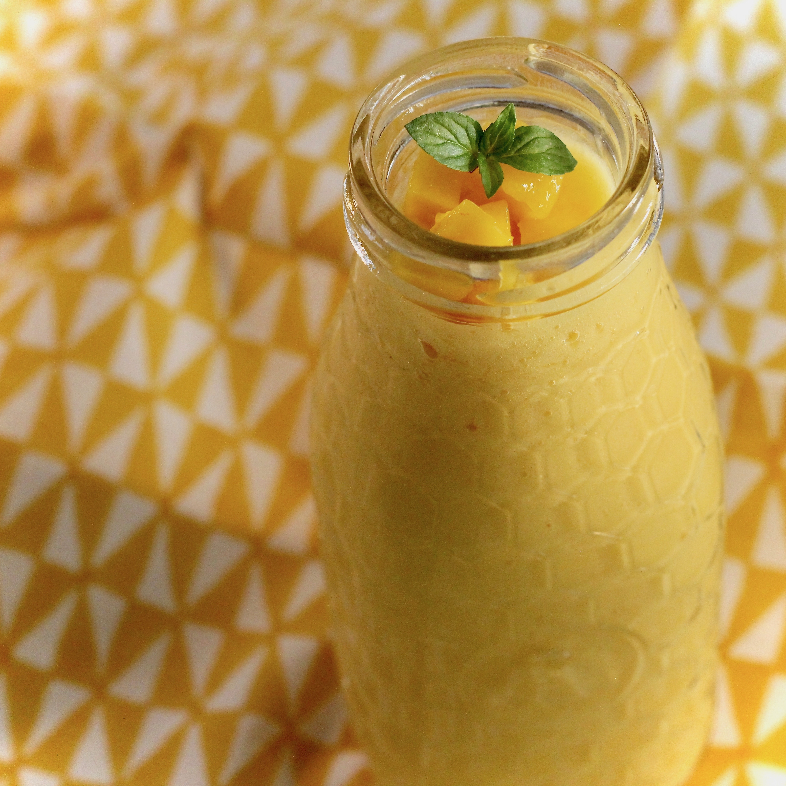

Summertime Mango Drink

Description:
One of my favorite drinks of the summer.
It's really easy and takes only 5 minutes or less to prepare.
My husband cannot get enough of it.
If you want to serve 6 to 8 people, just double the ingredients.
Ingredients:
- 2 mangoes, cut into cubes
- 1 cup ice cubes
- 1 teaspoon vanilla extract
- 1 tablespoon white sugar
- 5/3 cups milk
Steps:
- Combine mangoes, ice cubes, vanilla extract,
and sugar in a blender; pour in milk.
Blend until liquefied.